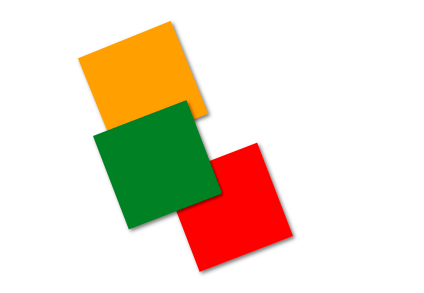
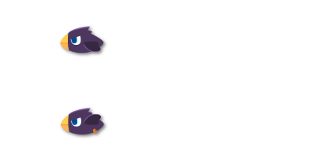

基本图形对象¶
在基本绘图函数中，我们在画布上绘制除了许多图形，但是，如果我们想要对已经画出来的图形进行操作，那么上诉方法就无能为力了。我们需要创建图形对象来控制这些图形。
基本图形对象 Shape¶
Shape 是所有图形对象的基础，也就是说，其他继承自Shape的图形都有Shape的属性和方法。
class Shape {
constructor ()
}
方法¶
填充 fill¶
将图形填充
画 draw¶
将图形画在画布上，默认情况下，draw等于fill
旋转rotate(degree)¶
图形旋转的三要素是旋转中心点、方向和度数
默认旋转中心点为图形中心点，可以通过shape.setAnchor来修改旋转中心点
参数： degree： 角度，单位为°，360度为一圈 无碰撞： false
旋转中心点的选择¶
shape.setAnchor(x, y) 设置图形的旋转中心点，x、y为坐标值，默认为图形的中心点
shape.setAnchorRate(x, y) 设置图形的旋转中心点，x、y为比率，默认为0.5, 0.5，即中心点
上述2个方法只能生效一个，后续方法会覆盖之前的方法
var rectOrange = new Rectangle(100, 100, 100, 100);
var rectRed = new Rectangle(200, 200, 100, 100, "red");
var rectGreen = new Rectangle(100, 200, 100, 100, "green");
rectGreen.setAnchor(100, 200);
rectRed.setAnchorRate(1, 1);
let i = 0;
// 把鼠标移过去查看效果
Mouse.move = function(){
rectOrange.rotate(i++);
rectRed.rotate(i);
rectGreen.rotate(i);
};
function main(){
canvas.clear();
rectOrange.draw();
rectRed.draw();
rectGreen.draw();
}
run(main);
当鼠标在画布上移动时，各个正方形就会以不同的中心点进行移动。

平移 translate(x, y)¶
将原始图形平移x、y个像素
缩放 scale(x, y)¶
将图形水平方向放大至原始大小的x倍，将垂直方向放大至原始大小的y倍。
斜切 skew(x, y)¶
将图形往x、y轴方向倾斜x、y比例，当x=1时，往x方向倾斜45度
设置形变中心点 setAnchor(x, y)
设置形变的中心点，x、y为比率，当x=0.5， y=0.5时，中心点在图形中心点。
碰撞collide(shape)¶
判断图形是否碰到另一个图形。
返回值： 如果发生碰撞： {x, y} 某个碰撞点的坐标 无碰撞： false
例子：圆和长方形的碰撞
var rect = new Rectangle(100, 100, 100, 100);
var circle = new Circle(100, 100, 30);
Mouse.move = function(){
circle.x = Mouse.x;
circle.y = Mouse.y;
};
function main(){
canvas.clear();
rect.draw();
circle.draw();
var p = circle.collide(rect);
if(p){
new Point(p.x, p.y).draw();
}
}
run(main);
克隆 clone()¶
返回一个完全相同的克隆体，深度复制所有的属性和方法。返回一个shape的克隆体，拥有shape所有的属性，该克隆体拥有独立的属性空间
返回值：shape
var url = "https://llcs-1252287760.cossh.myqcloud.com/";
var bird = new Animation(url+"animations/bird.png", 80, 120, 56, 42);
bird.setFrame(8, 1); // shiftX, shiftY, frameX, frameY, columns, rows
var bird2 = bird.clone();
bird2.y += 100;
bird2.setSpeed(20);
function main(){
canvas.clear();
bird.draw();
bird2.draw();
}
run(main)
在画布上，我们可以看到2只速度不同的飞翔小鸟。
